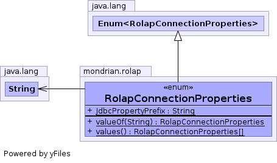

public enum RolapConnectionProperties extends Enum<RolapConnectionProperties>
RolapConnectionProperties enumerates the allowable values of
keywords in a Mondrian connect string.
Note to developers: If you add or modify a connection-string property, you must also modify the Configuration Specification.

| Enum Constant and Description |
|---|
Catalog
The "Catalog" property is the URL of the catalog, an XML file which
describes the schema: cubes, hierarchies, and so forth.
|
CatalogContent
The "CatalogContent" property is an XML string representing the schema:
cubes, hierarchies, and so forth.
|
CatalogName
The "CatalogName" property is not used.
|
DataSource
The "DataSource" property is the name of a data source class.
|
DataSourceChangeListener
The name of a class implementing the
DataSourceChangeListener interface. |
DynamicSchemaProcessor
The name of a class implementing the
DynamicSchemaProcessor interface. |
Ignore
The "Ignore" property is a boolean value.
|
Instance
The "Instance" property is the unique identifier of a mondrian server
running in the current JVM.
|
Jdbc
The "Jdbc" property is the URL of the JDBC database where the data is
stored.
|
JdbcConnectionUuid
The "JdbcConnectionUuid" property is the unique identifier for the
underlying JDBC connection.
|
JdbcDrivers
The "JdbcDrivers" property is a comma-separated list of JDBC driver
classes, for example,
"sun.jdbc.odbc.JdbcOdbcDriver,oracle.jdbc.OracleDriver". |
JdbcPassword
The "JdbcPassword" property is the password to log on to the JDBC
database.
|
JdbcUser
The "JdbcUser" property is the name of the user to log on to the JDBC
database.
|
Locale
The "Locale" property is the requested Locale for the
LocalizingDynamicSchemaProcessor.
|
PinSchemaTimeout
The "PinSchemaTimeout" defines how much time must Mondrian
keep a hard reference to schema objects within the pool of schemas.
|
PoolNeeded
The "PoolNeeded" property tells Mondrian whether to add a layer of
connection pooling.
|
Provider
The "Provider" property must have the value
"Mondrian". |
Role
The "Role" property is the name of the
role
to adopt. |
UseContentChecksum
Allows to work with dynamically changing schema.
|
UseSchemaPool
The "UseSchemaPool" property disables the schema cache.
|
| Modifier and Type | Field and Description |
|---|---|
static String |
JdbcPropertyPrefix
Any property beginning with this value will be added to the
JDBC connection properties, after removing this prefix.
|
| Modifier and Type | Method and Description |
|---|---|
static RolapConnectionProperties |
valueOf(String name)
Returns the enum constant of this type with the specified name.
|
static RolapConnectionProperties[] |
values()
Returns an array containing the constants of this enum type, in
the order they are declared.
|
public static final RolapConnectionProperties Provider
"Mondrian".public static final RolapConnectionProperties Jdbc
DataSource or #Jdbc.public static final RolapConnectionProperties JdbcDrivers
"sun.jdbc.odbc.JdbcOdbcDriver,oracle.jdbc.OracleDriver".public static final RolapConnectionProperties JdbcUser
public static final RolapConnectionProperties JdbcPassword
public static final RolapConnectionProperties Catalog
CatalogContent.public static final RolapConnectionProperties CatalogContent
When using this property, quote its value with either single or double quotes, then escape all occurrences of that character within the catalog content by using double single/double quotes. ie:
CatalogContent="<Schema name=""My Schema""/>"
See also Catalog.
public static final RolapConnectionProperties CatalogName
Catalog.public static final RolapConnectionProperties DataSource
DataSource interface.
You must specify either DataSource or Jdbc.public static final RolapConnectionProperties PoolNeeded
If no value is specified, we assume that:
Jdbc property are not pooled,
and therefore need to be pooled,
DataSource are already pooled.
public static final RolapConnectionProperties Role
role
to adopt. If not specified, the connection uses a role which has access
to every object in the schema.public static final RolapConnectionProperties UseContentChecksum
true and schema content has changed (previous checksum
doesn't equal with current), schema would be reloaded. Could be used in
combination with DynamicSchemaProcessor propertypublic static final RolapConnectionProperties UseSchemaPool
public static final RolapConnectionProperties DynamicSchemaProcessor
DynamicSchemaProcessor interface.
A dynamic schema processor is called at runtime in order to modify the
schema content.public static final RolapConnectionProperties Locale
Locale.getDefault().public static final RolapConnectionProperties DataSourceChangeListener
DataSourceChangeListener interface.
A data source change listener is used to flush the cache of
mondrian every time the datasource is changed.public static final RolapConnectionProperties Ignore
Schema.getWarnings().public static final RolapConnectionProperties Instance
public static final RolapConnectionProperties JdbcConnectionUuid
public static final RolapConnectionProperties PinSchemaTimeout
After the timeout is reached, the hard reference will be cleared and the schema will be made a candidate for garbage collection. If the timeout wasn't reached yet and a second query requires the same schema, the timeout will be re-computed from the time of the second access and a new hard reference is established until the new timer reaches its end.
If the timeout is equal to zero, the schema will get pinned permanently. It is inadvisable to use this mode when using a DynamicSchemaProcessor at the risk of filling up the memory.
If the timeout is a negative value, the reference will behave
the same as a SoftReference. This is the default behavior.
The timeout value must be provided as a String representing both the time value and the time unit. For example, 1 second is represented as "1s". Valid time units are [d, h, m, s, ms], representing respectively days, hours, minutes, seconds and milliseconds.
Defaults to "-1s".
public static final String JdbcPropertyPrefix
public static RolapConnectionProperties[] values()
for (RolapConnectionProperties c : RolapConnectionProperties.values()) System.out.println(c);
public static RolapConnectionProperties valueOf(String name)
IllegalArgumentException - if this enum type has no constant
with the specified nameNullPointerException - if the argument is nullname - the name of the enum constant to be returned.